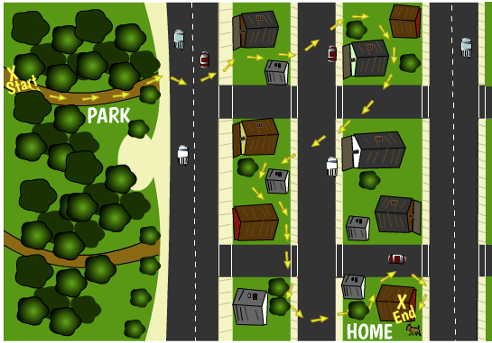

Speed, velocity, and acceleration are related to each other. Each of these can
be measured at an instant (or a point in time) or as averages over a given time interval
(for
example, a few seconds or minutes).
We'll start with the simplest of these quantities, speed...
First, what is speed? The Speed of an object is simply how fast the object is moving.
We can calculate (a) the speed of an object
across some time, or the average speed, or (b) the speed of an object at a moment
in time: the "instantaneous" speed.
Average speed. The
average speed of an object is defined as the distance the object travels
divided by the time it takes to travel that distance:
Speed (average) = distance traveled / time
For example, a car drives a distance of 10,000 meters (6.21 miles) in 1,000 seconds
(16.67 minutes). The car's average speed can be calculated as:
Speed (average) = 10,000 m / 1,000 s = 10 m/s
We can also calculate the time it takes
something to move a certain distance, if we know the distance it travels and its
average speed during that time:
time = distance / speed (average)

For example, a lost dog runs a distance of 3,000 meters looking for his home. His
path is shown in the picture to the left. The dog's high-tech collar shows that his
average speed during this time was 3 m/s. The (happy) owner calculated the time the dog
took to find his home using this equation:
time = distance / average speed
time = 3,000 m / 3 m/s
time= 1,000 s
time = 1,000 s / (60 s / 1 minute)
time = 16.67 minutes
Instantaneous speed. The instantaneous speed of an object is
its speed (for
example, in meters per second) at
a specific moment in time. The speedometer in a car measures the instantaneous speed
of the car (in miles per hour or kilometers per hour) at any moment. Because it is
measuring the instantaneous speed of the car, the speed can be continually
changing.
The speedometer in a car measures the instantaneous speed of the car (in miles or
kilometers per hour), or the speed of the car at any moment. The picture below shows a speedometer (in
kilometers per hour, or km/h).
To simplify, in this unit,
the following definitions of velocity and acceleration will apply to motion in a straight line
without changing direction.
What is Velocity?
The velocity of an object includes both its speed and the direction it is
moving. Because it has both a numerical value and a direction, velocity is said to be a
"vector" quantity. (See Vector vs. Scalar Quantities for more information about
vectors.)
If the speed of an object is 100 m/s and the object is moving eastward, its
velocity is 100 m/s eastward.
The instantaneous velocity of an object is its speed (for
example, meters per second)
and direction it is moving at
a specific moment in time. The
instantaneous speed in combination with the direction the object is moving at a
given time is equal to its instantaneous velocity (at that point in time).
Instantaneous Velocity =
Instantaneous Speed + direction
The picture below shows a speedometer (in kilometers per hour, or km/h). The car is
moving due east at the moment this picture was taken. So, we would say that the
instantaneous velocity of the car at this moment is 245 km/h due east.
What is acceleration? An object
is accelerating if its velocity is changing. Remember: velocity is a
vector quantity
, which has both a magnitude
(speed) and a direction (the direction it is moving).
So, an object is accelerating if either
its SPEED is changing or if the DIRECTION the object is moving changes. Or
both!
For example, if an object is moving in a straight line but its speed is
changing, this object is accelerating (or its acceleration is not equal to
zero). For example, the car below is accelerating. Its speed increases with each
second. (You can tell because it moves farther and farther with each second.)
If an object is moving at the same speed but changing directions, the object
is accelerating. For example, the car below is moving on a circular track at a
constant speed (moving the same distance every 10 seconds). But it is constantly
changing directions. Because it is changing directions, it is accelerating (or
its acceleration is not equal to zero).
If an object is changing in speed and direction, it is
accelerating. In the example below, the speed of the car is increasing from
0 seconds to 30 seconds. The car is also (constantly) changing its
direction. So, this car is accelerating--and its acceleration is
greater than the acceleration of the car above that changes direction
without changing speed.
Acceleration (average). Just like speed and velocity, we can calculate either
average acceleration (over some time) or the instantaneous acceleration (at a moment in
time).
The average acceleration of
an object is defined as the change in velocity of an object divided by the time it
took for the velocity to change:
If an object is moving in a straight line in a given direction, the magnitude
of the acceleration of the object is equal to the change in its speed over the time it
takes for that change in speed as well of the direction of its change in speed:
In general, when something is moving in a straight line
and its speed is increasing, its acceleration is in the same
direction of its motion or velocity.
Acceleration Example 1: Speeding up/Accelerating: A car initially at a
stop light accelerates in a straight line eastward and reaches a speed of 20 m/s (about 45
miles per hour) in 10 seconds. The car's acceleration can be calculated as:
Acceleration (average) = (20 m/s - 0) / 10 s = 2 m/s2 (eastward)
This means that each second, the speed of the car increases by 2 m/s.
So after one second, the car is travelling at 2 m/s. After two seconds,
the car is travelling at 4 m/s. After three seconds, the car is travelling at 6 m/s,
etc.
This relationship between time and speed for a car accelerating at a
constant 2 m/s2 is shown in the graph
below:
Acceleration Example
2:
constant speed. A child on a sled rides straight down a hill with a 15
degree slope. When the child gets a running start and falls on the sled at time-1, the
child is moving at 5 m/s (about 11 mph). Ten seconds later (time-2), the child is
still moving at 5 m/s sliding down the hill on the sled. What is the child's average
acceleration between time-1 and time-2?
The
child's (average) acceleration can be calculated as:
Acceleration (average) = (5 m/s - 5 m/s) / 10 s = 0
m/s2 (at -15 degrees, or 15 degrees below the horizontal)
The child's speed has not changed over this period of time, so the
child's (average) acceleration (over this time interval) is zero.
Acceleration Example 3: Slowing down/decelerating. A
baseball player is running from third base at 5 m/s when he slides into home base and
stops 1 second later.
The baseball player's average acceleration can be calculated as:
Acceleration (average) = (0 - 5 m/s)/1 s = -5 m/s (from 3rd base toward
home plate)
This negative value of acceleration can also be expressed as: 5 m/s
(from home plate toward 3rd base). In other words, the direction of the
player's acceleration is opposite the direction of his motion!
In general, when something is moving in a straight line and
slowing down, its acceleration is in the direction opposite of its
motion or velocity.
Calculating final speed from
acceleration. We can
also calculate the final speed of an object if we know its initial speed and its
acceleration.
Example 4: After hockey practice, the team takes off their
helmets and puts them in a box in the middle of the hockey rink. When all the helmets
are in the box, the coach pushes on the box using his hockey stick, which accelerates
at a constant 2 m/s2 from rest, for 2 seconds. What is the final speed of
the box after 2 seconds?
Using the definition of acceleration:
Acceleration = (final velocity - initial velocity)/time (for object
to go from the initial to final velocity)
We can re-write this equation by multiplying each side by time:
Acceleration × time (for object to go from the initial to final
velocity) = (final velocity - initial velocity)
Then we add initial velocity to each side:
Acceleration × time (for object to go from the initial to final
velocity) + initial velocity = final velocity
Reversing the sides of the equation:
Final velocity = acceleration × time (for object to go from the
initial to final velocity) + initial velocity


{kind=link}
{kind=link}
{kind=link}
{kind=link}
{kind=link}